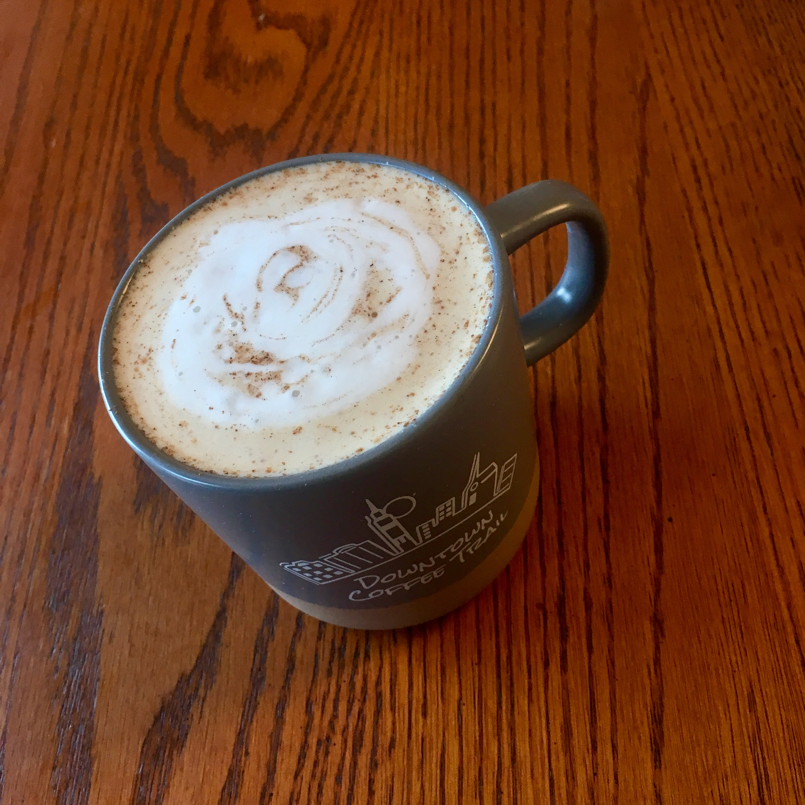

aeropress
cafe tres generaciones
costa rica peaberry, medium
20g coffee, 0.25 tsp brown sugar, 200g water, sprinkle of cinnamon
0+8 on lido e-t
water at 212 deg f
attempt at a homebrew 'drank'
inspired by dalton bright
inverted method
10g coffee, 0.25 tsp brown sugar, 10g coffee (cubano)
50g bloom for 30s
at 30s, pour to 200g
invert over mug and press for 30s
add sprinkle of cinnamon over aeropress shot
warm and froth 200g milk in french press
add milk to aeropress shot
overall impressions: getting more flavors than before, still kinda bland
probably needs more coffee and less milk
can't really taste the brown sugar, but still a really solid first try
eight stars out of ten
